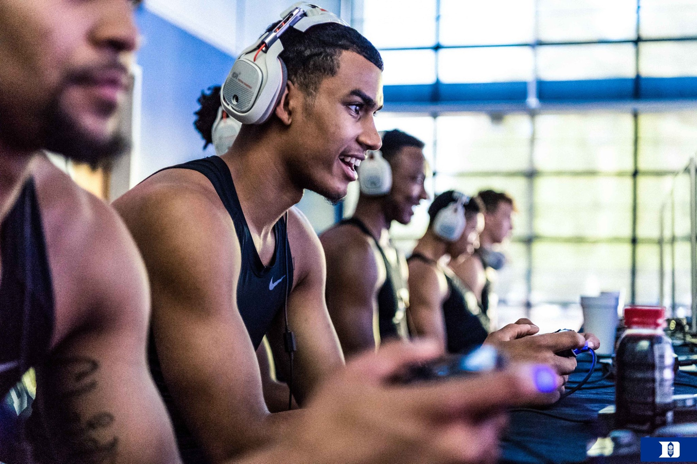
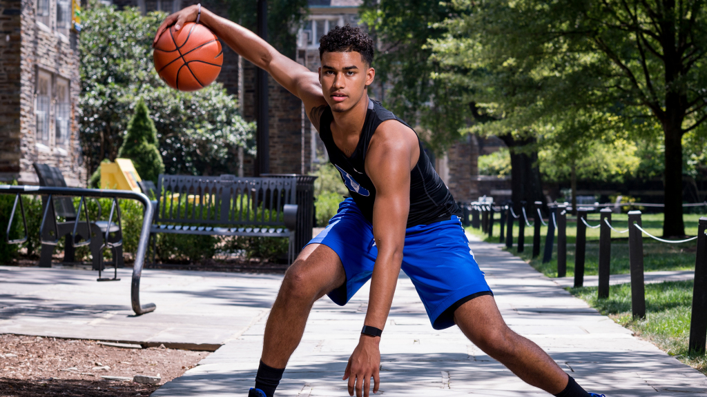
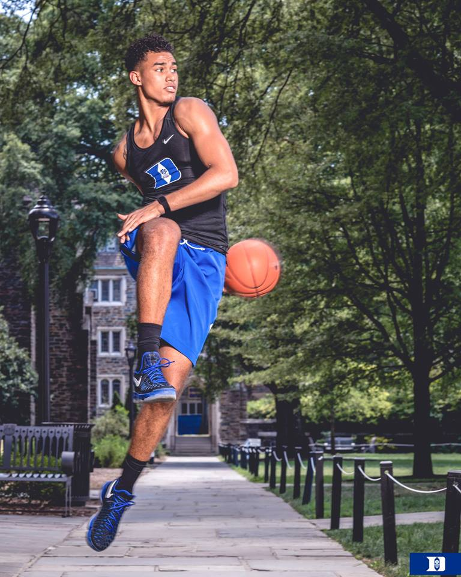
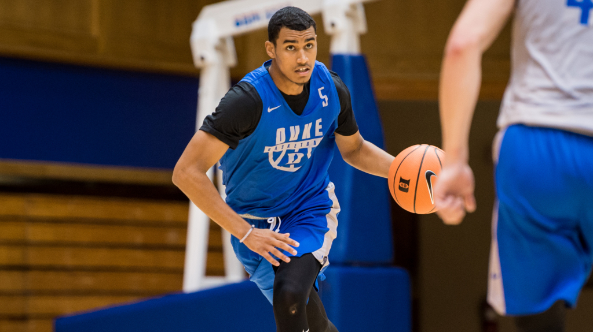
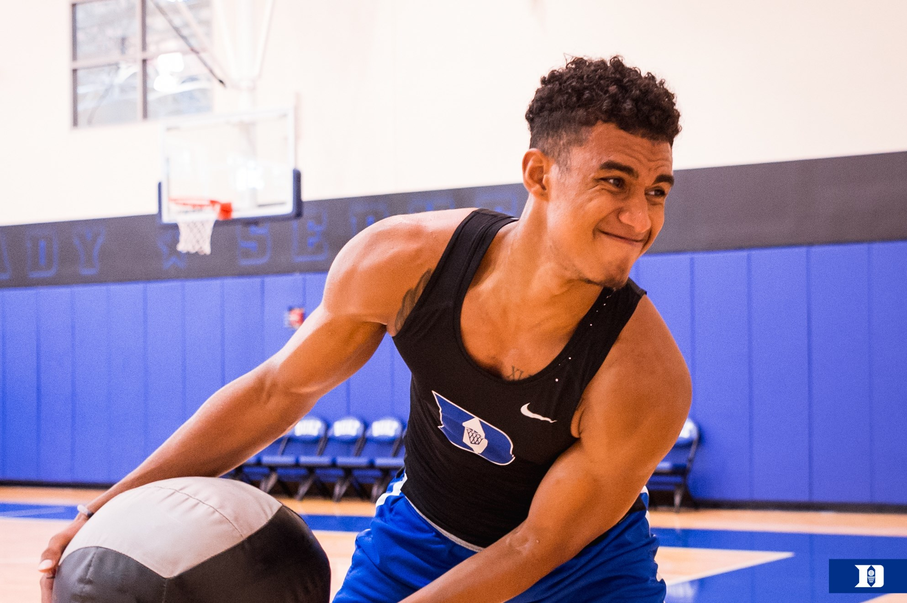
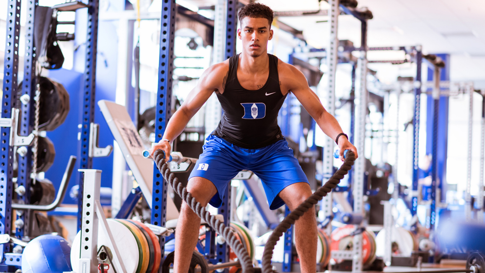

JORDAN TUCKER
Basic Profile

Role on the Team
Although one of the top ranking small forwards in the class of 2017, Jordan Tucker hasn't seen any minutes at the small forward position just yet. At 6'7" and 212 pounds, Tucker was in the top 50 overall players in his class because of his three point shooting and utilizing his body and height so that he can get to the basket easily. Tucker looks to hopefully get some playing time this year, but with Grayson Allen playing the majority of the small forward minutes, it seems unlikely.
Highlights
Check out Jordan Tucker's highlight reel where he showcases his shooting range, his ability to score easily in the lane, and his fadeaway game.
Accomplishments & Awards
Photos





